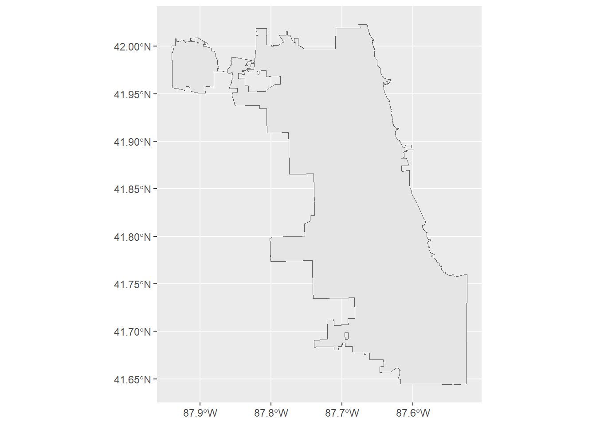
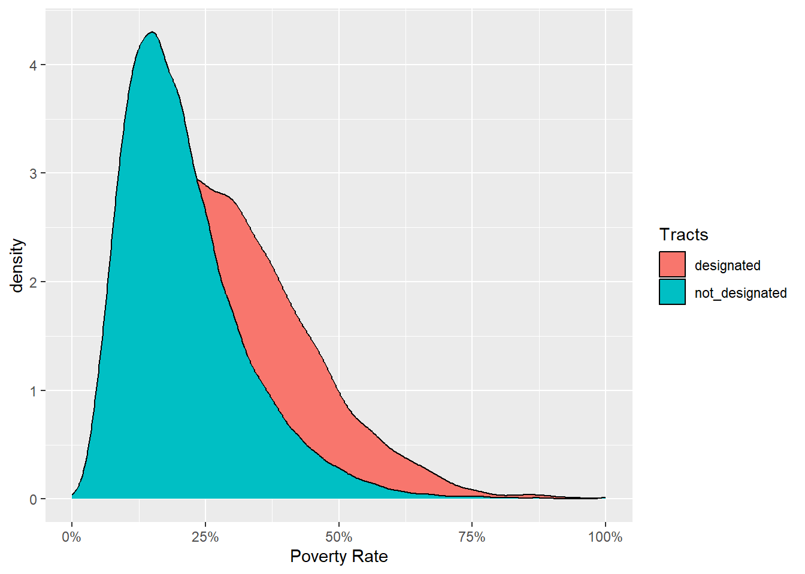
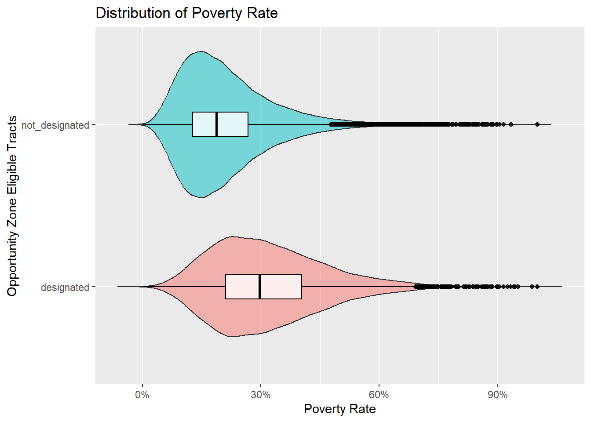
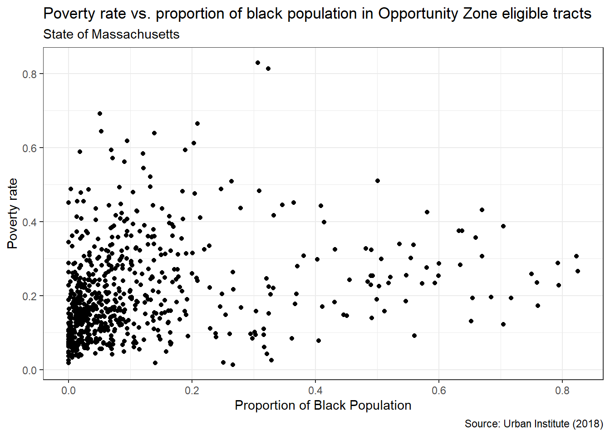
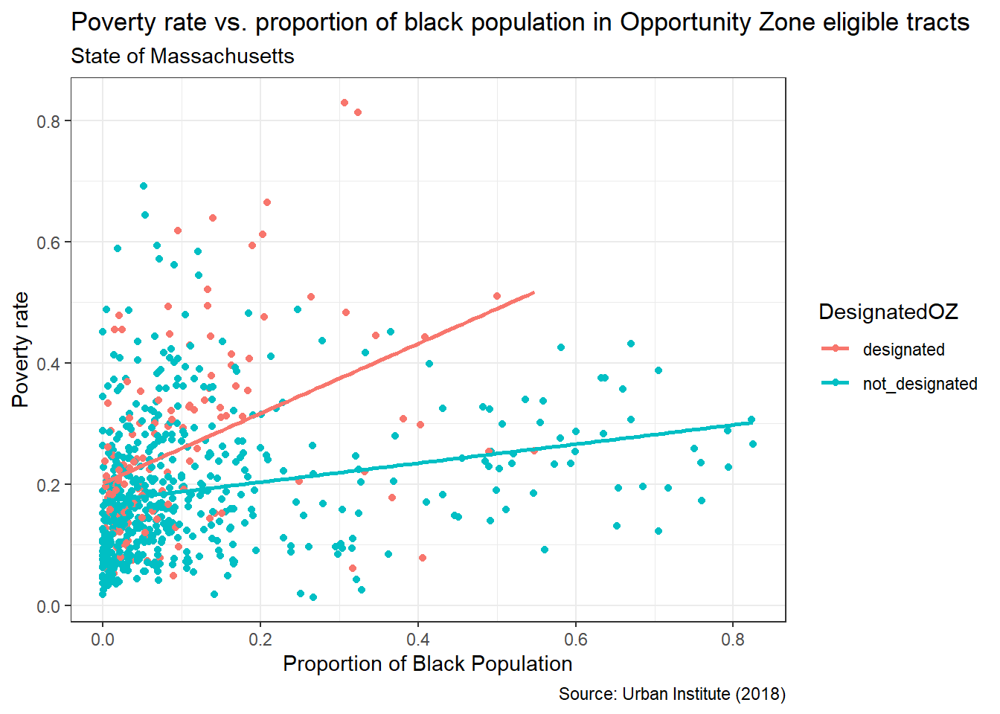
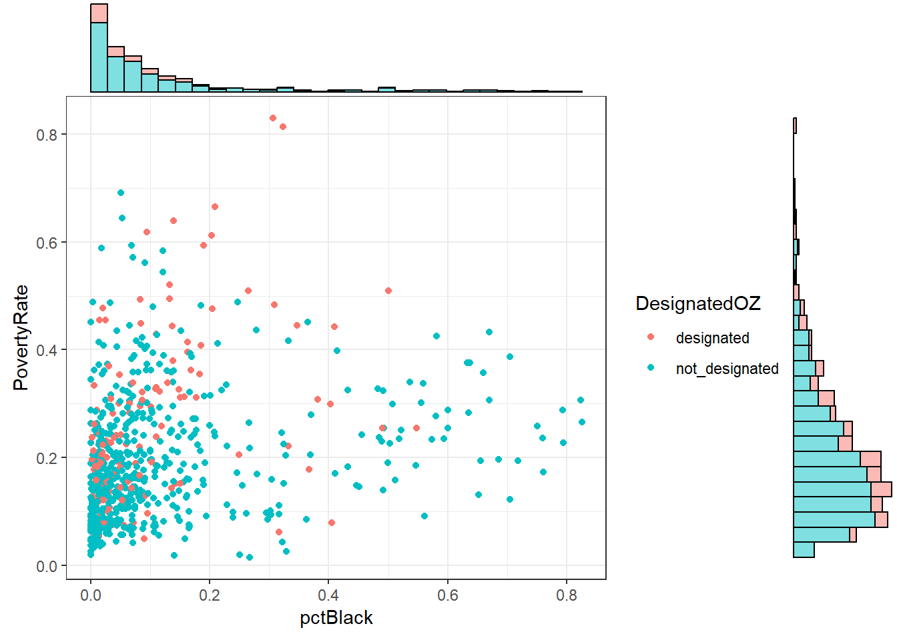

library(readxl)
library(tidyverse)
library(DataExplorer)Exploratory Data Analysis with 
11.S196/11.S939 Applied Data Science for Cities
Overview
This week’s Lab Exercise focuses on the dplyr package and the ggplot2 package. It also engages with data visualization best practices by demonstrating how to create and interpret a variety of graphics.
Exploratory data analysis (EDA) is a phase of a data science workflow that emphasizes getting to know the data before rushing to analyze it. EDA typically involves the creation and interpretation of summaries and graphics in order to gain insights that can inform more sophisticated analyses later on.
Our study topic today
In the 2017 Tax Cuts and Jobs Act, a new federal incentive was introduced to encourage investment in low-income and undercapitalized communities. States were given the chance to select specific census tracts as Opportunity Zones, where investors could enjoy tax benefits for their eligible investments. Although, there’s been a lot of curiosity among practitioners and researchers regarding how effective the program is and whether the designations made by governors were successful.
If you are interested in the locations of these Opportunity Zones, you can check out this map. The brown geometries reflected on the map are census tracts, which are statistical subdivisions of a county for collecting demographic and socioeconomic information about inhabitants. Find a familiar place for you, and see which areas have been designated as Opportunity Zones.
Download data and load packages
Create a folder, for example, named “Lab 2”. Open RStudio and navigate to File > New Project… When the dialog box will appear, choose Existing Directory. Proceed to create a new R project within your “Lab 2” folder.
You can create a new R file to implement the code from the tutorial; you will be asked to start a Quarto Document when you begin your exercises at the end of this tutorial.
Now navigate to Urban Institute’s website about Opportunity Zones, find the link “Download tract-level data on all Opportunity Zones”, and download this dataset to your Lab 2 project folder. Rename the file if you need.
To stay organized, we should load packages at the beginning of our markdown document. These are the three packages we are going to use today. You may want to run install.packages() on readxl and DataExplorer if it’s the first time you use them.
Read and examine our data
The file we’ve downloaded is in the Microsoft Excel “.xlsx” format. But it’s not a problem at all. We can use read_xlsx from the readxl package to read these files.
data <- read_xlsx("urbaninstitute_tractlevelozanalysis_update01142021.xlsx")
This data lists tracts nationwide that are eligible to be designated as Opportunity Zones, whether they have been designated as Opportunity Zones or not, along with essential Census demographic data that describe these tracts. You can also see this dataset has 42,178 observations (rows) and 27 variables (columns).
Here are the column definitions:
- geoid: combined state, county, tract FIPS (Federal Information Processing Standards) code this is a unique identification number for each census tract. If it is the first time you heard of tracts, they are sub-areas of a county defined for the purpose of taking a census.
- state: the name of the state
- county: the county name
- Designated: 1 when an eligible tract was designated as an opportunity zone, and NA where the tract was not designated.
- Type: category for OZ designation
- Population: total population of the tract
- PovertyRate: poverty rate
- medhhincome: median household income
- medrent: median gross rent (per month)
- medvalue: median house value
- vacancyrate: residential vacancy rate
- unemprate: unemployment rate
- pctwhite: White non-Hispanic population (%)
- pctblack: Black non-Hispanic population (%)
- pctHispanic: Hispanic and Latino population (%)
- Metro: tract in a metropolitan area
View the dataset in your data viewer. While browsing its variables, there might be something we are interested to know:
- How many Opportunity Zones are there, and what is the situation at the federal, state, and county levels?
- Are there any distinguishable differences in economic conditions between designated and not designated census tracts? Differences in terms of poverty rate, vacancy rate, median household income, demographics, etc.
Data cleaning
The mutate function in dplyr allows you to modify your dataset by either adding new columns, or updating values in existing columns. It’s a very flexible function because you can transform existing variables using a wide range of operations, such as arithmetic calculations, conditional expressions, or functions.
For example, the Urban Institute has coded the designated variable as either taking a value of 1 when designated, or NA when not. Since the NA and 1 here have no mathematical meaning, it would be easier to read if the column simply showed text like “Designated” or “Not Designated.” In the following code, we are updating the column DesignatedOZ.
ozs <- data |>
mutate(DesignatedOZ =
ifelse(is.na(DesignatedOZ),
"not_designated", "designated"))The ifelse(condition, "not_designated", "designated") is used to set the value of DesignatedOZ based on the condition: If DesignatedOZ is NA, it assigns the text “not_designated”. Otherwise, it assigns “designated”. After the modification, we can make a quick count of both types of tracts.
ozs |>
count(DesignatedOZ) # A tibble: 2 × 2
DesignatedOZ n
<chr> <int>
1 designated 8764
2 not_designated 33414Note: A common point of confusion is the similarity between <- (assign to) and |>(pipe) and when to use them. To put it briefly:
- When to Use
<-: Use<-to save our object. In the example above, we are keeping the original data intact, but created a new object calledozs. - When Not to Use
<-: If you only want to view results without modifying the object.
There are a few columns (such as SE_Flag) that wont’ be very helpful for this analysis. We can select a subset of columns to work on. If there is a minus sign in front of the column names, that means to drop these specified columns.
ozs <-
ozs |>
select(-c(dec_score, SE_Flag, pctown, Metro, Micro, NoCBSAType))One of the characteristics tracked in the Urban Institute data is the median household income for each tract (medhhincome). We might want to question whether there’s a difference in the median household income for designated and not-designated census tracts.
However, if you scroll down to the bottom of the dataset in the data viewer, you will notice there are quite a few of NAs in the Census demographic columns.
How many missing values are there, and how many would be a hurdle for my analysis? It will be great to have a sense of completeness in terms of what proportion of a field actually holds data. Below we use is.na to check if each element in ozs is NA, and use colSums to sum up all TRUE values by column.
colSums(is.na(ozs)) geoid state DesignatedOZ county
0 23 0 98
Type Population medhhincome PovertyRate
0 112 249 141
unemprate medvalue medrent severerentburden
141 1106 395 189
vacancyrate pctwhite pctBlack pctHispanic
167 131 131 131
pctAAPIalone pctunder18 pctover64 HSorlower
131 131 131 132
BAorhigher
132 Another way to observe missing values in each column is to use plot_missing in the DataExplorer package.
plot_missing(ozs)
plot_missing calculates the proportion of missing values in a given variable, and makes some judgemental calls of whether the missing is significant, indicated by “Good”, “OK”, and “Bad”. (Feel feel to check out ?plot_missing in your console. What are the default ranges for these three categories?) Overall, most of our columns have a very small portion of missing values (less than 1%) and would not create significant representative issues. However, when performing calculations, we need to include the na.rm = TRUE argument, indicating that we are calculating based on the available 99%.
Create Summary tables
We can calculate the average median household income for designated and not-designated census tracts. That is to collapse the stat summary of median household income summarise(mean(medhhincome)) into two groups group_by(DesignatedOZ) .
ozs |>
group_by(DesignatedOZ) |>
summarise(
Tracts = n(),
Income = mean(medhhincome, na.rm=TRUE))# A tibble: 2 × 3
DesignatedOZ Tracts Income
<chr> <int> <dbl>
1 designated 8764 33346.
2 not_designated 33414 44446.We can also put two columns in the group_by function, for instance, grouping first by state and then by eligibility, allowing for comparisons within each state.
ozs |>
group_by(state, DesignatedOZ) |>
summarise(
Income = mean(medhhincome, na.rm=TRUE))# A tibble: 108 × 3
# Groups: state [57]
state DesignatedOZ Income
<chr> <chr> <dbl>
1 Alabama designated 30044.
2 Alabama not_designated 36542.
3 Alaska designated 49840.
4 Alaska not_designated 54784.
5 American Samoa designated NaN
6 Arizona designated 34373.
7 Arizona not_designated 40961.
8 Arkansas designated 31254.
9 Arkansas not_designated 37814.
10 California designated 36134.
# ℹ 98 more rows“American Samoa” might have caught our attention at this step, because we’ve got NaN (not a number), indicating that all its values are NA. This prompts us to return to the dataset and further clean our data.
Are there any other states where all economic variable values are NA, possibly meaning that we have no records for tracts in those areas?
ozs |>
group_by(state) |>
summarize(all_na = all(is.na(Population))) |>
filter(all_na == TRUE)# A tibble: 5 × 2
state all_na
<chr> <lgl>
1 American Samoa TRUE
2 Guam TRUE
3 Northern Mariana Islands TRUE
4 Virgin Islands TRUE
5 <NA> TRUE The all(is.na(Population)) function checks if all values in the Population column for that state are NA. If they are, all_na will be TRUE. If we aim to produce economic stats and these states are uninformative, we can choose to remove them from our dataset:
ozs <-
ozs |>
filter(!state %in% c("American Samoa", "Guam", "Northern Mariana Islands", "Virgin Islands") & !is.na(state))Then perform the summary again:
ozs |>
group_by(state, DesignatedOZ) |>
summarise(
Income = mean(medhhincome, na.rm=TRUE))# A tibble: 103 × 3
# Groups: state [52]
state DesignatedOZ Income
<chr> <chr> <dbl>
1 Alabama designated 30044.
2 Alabama not_designated 36542.
3 Alaska designated 49840.
4 Alaska not_designated 54784.
5 Arizona designated 34373.
6 Arizona not_designated 40961.
7 Arkansas designated 31254.
8 Arkansas not_designated 37814.
9 California designated 36134.
10 California not_designated 50858.
# ℹ 93 more rowsIt might be useful for us to reshape our summary table, arranging it in a way that each state has a single row with separate columns for designated and not-designated income value.
Functions pivot_wider() and pivot_longer() are useful for reshaping data. pivot_wider() adds columns to a dataset by transitioning content from rows to columns. pivot_longer() does the opposite - it makes a dataset longer by transitioning columns to rows.
In our case, let’s use pivot_wider() to transition our Designated and Not Designated rows into columns.
ozs |>
group_by(state, DesignatedOZ) |>
summarise(
Income = mean(medhhincome, na.rm=TRUE)) |>
pivot_wider(names_from = DesignatedOZ, values_from = Income)# A tibble: 52 × 3
# Groups: state [52]
state designated not_designated
<chr> <dbl> <dbl>
1 Alabama 30044. 36542.
2 Alaska 49840. 54784.
3 Arizona 34373. 40961.
4 Arkansas 31254. 37814.
5 California 36134. 50858.
6 Colorado 41138. 49601.
7 Connecticut 36760. 51389.
8 Delaware 40971. 50143.
9 District of Columbia 38291. 62840.
10 Florida 31015. 40931.
# ℹ 42 more rowsAdd one more step, we can create a new column, to calculate and show the difference in income between designated and not designated tracts:
ozs |>
group_by(state, DesignatedOZ) |>
summarise(
Income = mean(medhhincome, na.rm=TRUE)) |>
pivot_wider(names_from = DesignatedOZ, values_from = Income) |>
mutate(Difference = designated - not_designated)# A tibble: 52 × 4
# Groups: state [52]
state designated not_designated Difference
<chr> <dbl> <dbl> <dbl>
1 Alabama 30044. 36542. -6498.
2 Alaska 49840. 54784. -4944.
3 Arizona 34373. 40961. -6588.
4 Arkansas 31254. 37814. -6560.
5 California 36134. 50858. -14724.
6 Colorado 41138. 49601. -8463.
7 Connecticut 36760. 51389. -14628.
8 Delaware 40971. 50143. -9172.
9 District of Columbia 38291. 62840. -24548.
10 Florida 31015. 40931. -9916.
# ℹ 42 more rowsGenerate Diagnostic Graphs
While summary tables are helpful, visualizations oftentimes provides a clearer picture of the data, making it easier to spot trends and patterns.
Distribution of one variable
Boxplot
The code below creates a boxplot to contrast the distribution of poverty rates between designated opportunity zones and undesignated zones. We are using grammars of the ggplot function introduced in class, then adding more features with the + operator and other functions listed in the package reference.
ozs |> ggplot(): This is the main plotting function.ozsis your dataset we use.geom_boxplot(): Recall that geometric layers are called geoms_*. It tells R what kind of geometry you want to use visualize the data.aes(x = DesignatedOZ, y = PovertyRate): Theaes()function is where you tellggplotwhich variable goes on the x axis followed by which variable goes on the y axis.- The third aesthetic element is
fill, which indicates the filled color of the boxplot. Accordingly, we use thefillargument in thelabsfunction to set the name of the legend. - We used a new function
scale_y_continuousto specify y axis properties. Here we are making sure the poverty rate are labeled as percentages. If you remove this line, they will by default show as decimal numbers.
ozs |>
ggplot(aes(x = DesignatedOZ, y = PovertyRate, fill = DesignatedOZ)) +
geom_boxplot() +
scale_y_continuous(labels = scales::percent) +
labs(x = "Opportunity Zone Eligible Tracts", y = "Poverty Rate", fill = "Tracts")
By comparing the 50th percentile (the horizontal line inside each box) we can see that tracts designated as Opportunity Zones have a higher poverty rate compared with those not designated. The heights of the boxes themselves give us an indication of how closely around the median all values in the dataset are concentrated—the degree of dispersion or spread. The vertical lines are called whiskers and extend upward and downward to the lowest values that are not candidates for outlier status. An outlier is an unusual value that could potentially influence the results of an analysis. These are indicated with dots in the boxplot.
Density plot
By modifying the last code chunk, we can make a density plot to describe the distribution of poverty rate. A density plot can be understood as a smoothed version of the histogram, and provides a more direct view of of the shape and peaks in the data. The x-axis typically represents the range of values for the variable of interest, while the y-axis represents the probability density (how likely it is for the variable to take on a particular value within that range).
ozs |>
ggplot(aes(x = PovertyRate, fill = DesignatedOZ)) +
geom_density() +
scale_x_continuous(labels = scales::percent) +
labs(x = "Poverty Rate", fill = "Tracts")
If you have noticed - in the code above, we didn’t provide a variable that what goes to the y-axis. Where does the value “density” come from?
Many graphs, like boxplot, plot the raw values of your dataset. But other graphs, like histograms and density plots, calculate new values to plot. Here a density takes the count of data points at discrete poverty rate levels and smooths it out into a continuous curve. Then calculated values (probability density) go to the y-axis.
Combinations of basic graphs to create composite views
One of the coolest thing about ggplot is that we can plot multiple geom_ on top of each other. For instance, we can combine the two plots above, to show both visually appealing curves and essential statistics (medians, quartiles, outliers, etc.) The following code uses two geom_(Check out geom_violin for more!), and introduces several new arguments for fine-tuning the cosmetics.
trim = FALSE: If TRUE (default), trim the tails of the violins to the range of the data. If FALSE, don’t trim the tails and show the complete distribution.alpha = 0.5: the transparency of the plotting area.coord_flip(): whether the y axis is displayed horizonally or vertically.legend.position = "none": the position of legend (“left”, “right”, “bottom”, “top”, or two-element numeric vector), or not showing the legend (“none”).
ozs |> ggplot() +
geom_violin(aes(x = DesignatedOZ, y = PovertyRate, fill = DesignatedOZ), trim = FALSE, alpha = 0.5) +
geom_boxplot(aes(x = DesignatedOZ, y = PovertyRate), color = "black", width = .15, alpha = 0.8) +
scale_y_continuous(labels = scales::percent) +
labs(
x = "Opportunity Zone Eligible Tracts",
y = "Poverty Rate",
title = "Distribution of Poverty Rate"
) +
coord_flip() +
theme(legend.position = "none")
A useful way to learn new arguments in ggplot is to take some of them out and see how it changes the plot.
Relationship between two variables
Scatter Plot
We are often interested in bivariate relationships or how two variables relate to one another. Scatterplots are often used to visualize the association between two continuous variables. They can reveal much about the nature of the relationship between two variables.
Let’s use your subset of Massachusetts data to perform this part of analysis. (We could use the nationwide dataset, but there will be over 40,000 points showing on the graph, which will not be pleasing to the eye).
ozs_ma <- ozs |> filter(state == "Massachusetts") We begin by creating a scatterplot of poverty rate and racial distribution. Note that we used theme_bw, which is a theme template for a cleaner look.
ozs_ma |>
ggplot(aes(x = pctBlack, y = PovertyRate)) +
geom_point() +
labs(x = "Proportion of Black Population",
y = "Poverty rate",
title = "Poverty rate vs. proportion of black population in Opportunity Zone eligible tracts",
subtitle = "State of Massachusetts",
caption = "Source: Urban Institute (2018)") +
theme_bw()
There is a slight increase of slope as we move from left to right along the x-axis. However, there are all the points shown here. How can we distinguish between the two groups - Add a third “aesthetic element”, which is DesignatedOZ, and include the linear regression lines using geom_smooth.
ozs_ma |>
ggplot(aes(x = pctBlack, y = PovertyRate, color = DesignatedOZ)) +
geom_point() +
geom_smooth(method = "lm", se = FALSE) +
labs(x = "Proportion of Black Population",
y = "Poverty rate",
title = "Poverty rate vs. proportion of black population in Opportunity Zone eligible tracts",
subtitle = "State of Massachusetts",
caption = "Source: Urban Institute (2018)") +
theme_bw()
Combinations: Scatterplot with marginal histograms
This is just for fun - If you want to create more advanced statistical plots, there are ways to do that too. The following graph requires an additional package ggExtra. But the part within ggplot should look familiar now.
#install.packages("ggExtra")
ggExtra::ggMarginal(
ggplot(ozs_ma,
aes(x = pctBlack, y = PovertyRate, color = DesignatedOZ)) +
geom_point(na.rm = TRUE) +
theme_bw(),
type = "histogram",
groupFill = TRUE
)
Exercise
Start a new Quarto document and remove its template texts.
In the YAML header of your Quarto document, please add embed-resources: true to ensure your HTML output is self-contained - so that you don’t lose any images when you submit it to us.

Exercise 1
The first exercise will ask you to create summary tables to analyze opportunity zones in Massachusetts. Please include the code you used, the tables you produced, and any explanatory text that you think would help clarify your results:
In Massachusetts, what are the average poverty rates for Opportunity Zones and non-Opportunity Zones?
When you have the result of Q1 (the summary for Massachusetts), what are the corresponding situations by county in Massachusetts?
Reorganize your previous table, which county has the greatest disparity in poverty rate between designated and non-designated tracts?
Exercise 2
Focus on your data in Massachusetts, now choose from the following variables: medhhincome, vacancyrate, unemprate, pctwhite, pctblack, pctHispanic, pctover64, HSorlower to help answer the following questions.
- Select one of the variables, create a graphical representation that contrasts its distribution in designated tracts and in undesignated tracts in Massachusetts.
- Select two variables, create a graphical representation that describes how they relate (or don’t relate) to each other, including the direction of this relationship..
- What can we say about the difference in demographic/economic conditions reflected by these graphs between designated and not designated tracts? Include in your document a few sentences of write-up. You can connect your findings with your summary tables above, and with some broader discussions about Opportunities Zones found here.
Exercise 3
First, let’s use our familiar group_by + summarise process to calculate the average median house income by county in Massachusetts.
ozs_ma |>
group_by(county, DesignatedOZ) |>
summarise(
Income = mean(medhhincome, na.rm=TRUE)) # A tibble: 25 × 3
# Groups: county [13]
county DesignatedOZ Income
<chr> <chr> <dbl>
1 Barnstable County designated 46717.
2 Barnstable County not_designated 61663.
3 Berkshire County designated 35199
4 Berkshire County not_designated 51122.
5 Bristol County designated 34573.
6 Bristol County not_designated 42035.
7 Dukes County not_designated 46816
8 Essex County designated 41358.
9 Essex County not_designated 49966.
10 Franklin County designated 41711.
# ℹ 15 more rowsPlease pipe your summarized table to ggplot() for visualization. The geom function you should use here is geom_col.
Take a few minutes to compare the bar chart you created and the one below:

There should be a few differences, which have enhanced the overall quality. How can you modify your code to replicate the bar chart in this image? In a new code chunk, please copy and paste your last bar chart code, and try your best to address the following questions.
- The bars are put side-by-side instead of stacking on top of one another. More explanations here. If you don’t want a stacked bar chart, you can use one of the three other options: “identity”, “dodge”, or “fill”.
- The x-axis labels are titled to 45 degrees. How can I achieve this? Hint.
- The labels on the y-axis are formatted in thousands with commas. This can be achieved by modifying the function
scale_y_continuous(labels = scales::percent)we have seen above. Hint. - Lastly, the counties are not arranged alphabetically, but rather by the income values mapped to the y-axis, starting from large to small. How can I achieve this? Hint.
- Please add the title, subtitle, x- and y-axis labels, and the data source annotation to your bar chart.
- Please choose a theme template for your bar chart.
Feel free to consult the R Graph Gallery and Aesthetic specifications for additional resources.
Work Products
After you render your Quarto document, you will find an “.html” file in your project folder. Please submit the Rendered HTML file that shows your work and responses for each of the three Exercises included in this lab. Make sure you have included embed-resources: true in your YAML header, this is to help preserve all your pictures in your HTML.
Please upload your report to Canvas by the end of day, Tuesday, Nov 5.